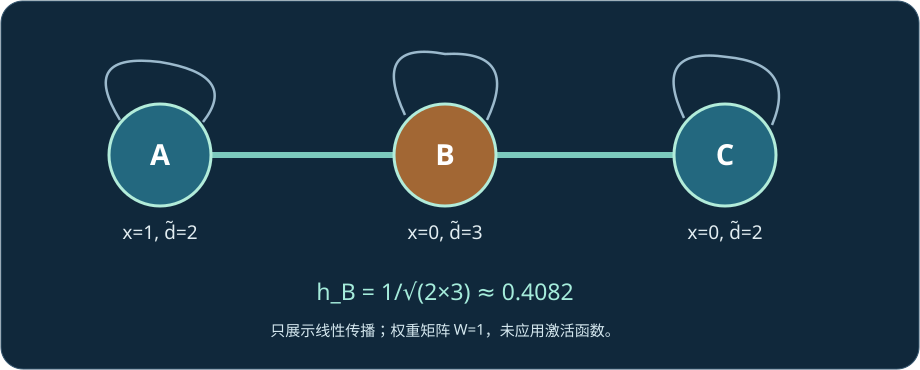
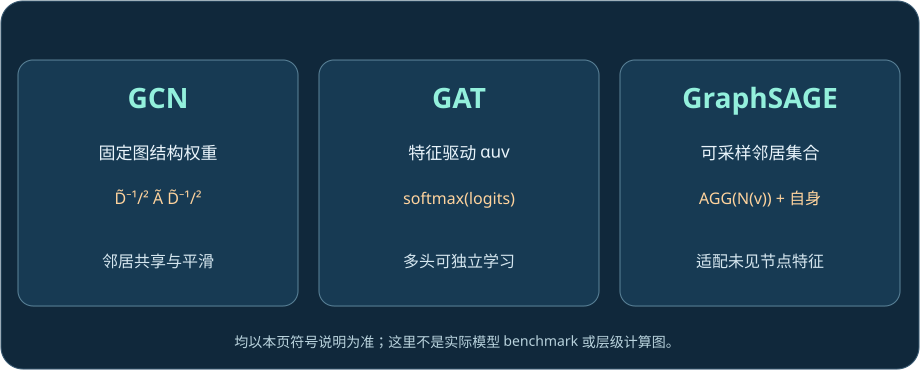

MESSAGE PASSING / GCN · GAT · GRAPH SAGE
沿三节点图手算 GCN 的归一化，再比较注意力与归纳式采样，明确图学习中的同质性假设、信息瓶颈和实验协议。
1. GNN 先要定义输入、邻居和要预测的对象
图神经网络（GNN）把图的关系结构与节点/边特征结合起来。给定图 G=(V,E)、节点特征矩阵 X∈Rⁿˣᶠ，常见任务包括节点分类、连接预测以及整个图的回归。节点分类输出每个节点的类别；链接预测需要为候选节点对打分；图分类需要读出或池化节点表示。三类任务的监督对象与可泄漏信息不同，不能只改模型最后一层就假定评估协议一致。
一般的消息传递网络在第 ℓ 层为节点 v 从邻居 u 收集消息 mᶩ(u→v)，使用排列不变的聚合 AGG（例如 sum、mean、max）得到聚合值，然后与自身旧状态一起更新 hᶩ⁺¹ᵥ。排列不变是指交换邻居输入顺序不能改变同一多重集合的结果，但重复边、多重图边权、采样概率和节点 ID 的一致性仍需显式处理。
第一层如果只使用直接邻居的信息，那么堆两层后通常可以获得两跳邻域的信息；但“能接收到两跳信息”不等于一定能从高维表示中无损还原所有两跳路径。拓扑本身不保证标签有同质性：在异配图中，相邻节点常有不同标签，简单平滑可能损害性能。
2. GCN 的归一化为什么不是普通平均？
Kipf & Welling（ICLR 2017）的常用传播层先给邻接矩阵 A 加上自环：Ã=A+I；再计算自环之后的度矩阵 D̃，线性传播为 Hᶩ⁺¹=σ(D̃⁻¹/²ÃD̃⁻¹/² HᶩWᶩ)。这个算子对称地按来源、目标节点的度调整信息权重。普通均值是把邻居值直接相加除以数量；对称归一化需要同时使用两端的度，因此数值通常不同。
考虑无向路径 A—B—C，自环后的节点度为 2、3、2。令所有节点仅有一个标量特征 x_A=1、x_B=x_C=0，同时取 W=1 且不使用激活函数：B 节点新的线性聚合为 1/√(2×3)=1/√6≈0.408248，不是普通三项均值 1/3。这一手算能直接暴露实现中把归一化写错的错误。

交互实验：对称归一化 vs 普通平均
B 自身与 C 的输入均为零；只改变 x_A，不训练模型。
对孤立节点，添加自环意味着该节点仍能传播自身特征；如果模型另外加入偏置、归一化层、激活或学习到的权重，上述简化数值将改变。代码与报告必须说明自环添加位置，否则不同库可能“重复加自环”。
3. GAT：注意力系数从哪里来？
Graph Attention Networks（Veličković 等，ICLR 2018）为每条允许参与聚合的边计算基于节点表示的原始注意力 logits，再在目标节点的邻居集合内做 softmax。典型单头形式 eᵥᵤ=LeakyReLU(aᵀ[Whᵥ∥Whᵤ])，αᵥᵤ=exp(eᵥᵤ)/∑ₖexp(eᵥₖ)。这仍然需要知道哪些边存在，所谓“注意力”并不使模型凭空发现未观测的边。
注意力权重是模型内部的依赖性参数化，未必等于因果影响、边的真实置信度或可用于政策决策的重要度。多头注意力可以拼接或平均多头结果，依层与任务而不同，不能说所有模型的 head 数或聚合规则都固定。
交互实验：两邻居的 softmax 质量分配
演示 exp(logit) 的归一化；不代表实际训练学到的系数。
4. GraphSAGE：如何对训练阶段没出现过的节点编码
GraphSAGE（Hamilton 等，NeurIPS 2017）学习的是从自身特征与邻居特征构造节点表示的聚合函数，而不只是为每个训练节点维护独立可学习 ID。典型形式是先对采样到的邻居求 AGG，再与自身前层表示拼接并经线性层、非线性激活；具体 mean、LSTM、pool aggregator 存在差异，文献中还有不同卷积变体，不应把 mean 的具体实现推广到全部 GraphSAGE。
邻居采样使得一个多层模型可以在不枚举全部高阶邻域的条件下近似更新表示，但采样引入方差与估计偏差。若每层最多选 f 个邻居，L 层单个种子节点的理论展开上界可能近似为 O(fᴸ)，而不是只看单层 O(f)。高连接节点更需要明确采样概率、随机种子和层级 fanout。

| 方法 | 信息权重来源 | 新节点推理条件 | 主要风险 |
|---|---|---|---|
| GCN 基础形式 | 自环加度归一化 | 需要新图特征及邻接信息 | 同质性偏好、深层过平滑 |
| GAT | 特征计算的邻域 softmax | 需要新节点/邻居特征 | 注意力不等于因果解释 |
| GraphSAGE | 聚合器与采样邻居 | 可观察特征和可用邻域 | fanout 放大、采样方差 |
5. 两种不同的深层失败：过平滑与过压缩
过平滑（over-smoothing）指随着反复传播，某些图和传播算子会让节点表示越来越难区分；过压缩（over-squashing）指远处大量信息不得不通过有限维的图瓶颈传递，导致目标节点无法有效利用遥远依赖。前者更多涉及迭代平滑造成的区分度下降，后者更多是图几何与信息通道瓶颈；两个概念相关但不能混作一个现象。
例如，两棵大分支只通过一条桥边相连时，对岸许多节点的信息要聚集经过这条桥。如果业务标签依赖远端某一小细节，有限维消息向量可能把信息挤掉。堆更多层未必改善。缓解方法可能涉及残差、跳跃连接、结构重连、全局读出和更适合任务的采样，但每种都要通过消融确认。
6. 训练—验证—测试：图是否先偷看了标签？
节点分类常见的transductive协议允许训练时见到测试节点的无标签图结构，标签只用于指定训练节点；严格inductive协议则可能把整张未来图或新节点留出。链接预测时更敏感：未来要预测的边不能进入训练时的消息传递邻接，否则 GNN 已经读到答案。负边采样必须说明何时观察、哪些节点能构成候选、是否存在未观察到但真实存在的边。
此外，多次用测试集选超参数会形成选择偏差。应固定随机种子与数据划分，报告多次运行的分布、评估窗口、类别基线、AP/AUC 等指标的具体口径。对 Cora 等基准，引用论文的准确率必须写清使用的任务划分与训练协议，本页不声称复现论文分数。
7. 无需深度学习框架的 GCN 数值验证
下面对 A—B—C 路径计算单层对称归一化中 B 的值，并验证输出与 1/√6 一致。这是数值契约，未训练任何 GCN/GAT/GraphSAGE。
from math import isclose, sqrt
# A-B-C, undirected; explicit one self-loop per node.
edges = {(0, 0), (1, 1), (2, 2), (0, 1), (1, 0), (1, 2), (2, 1)}
degree = [sum(1 for source, target in edges if source == k) for k in range(3)]
feature = [1.0, 0.0, 0.0]
def propagate(target):
return sum(
feature[source] / sqrt(degree[source] * degree[target])
for source, dest in edges if dest == target
)
assert degree == [2, 3, 2]
assert isclose(propagate(1), 1 / sqrt(6), rel_tol=1e-12)
assert not isclose(propagate(1), sum(feature) / 3, rel_tol=1e-3)
print("GCN linear B =", round(propagate(1), 6))迁移到 PyTorch/PyG 时，还应明确：边索引是否为双向，是否加自环，网络算子是否自动归一化，梯度如何传播，推理是否使用 batch/subgraph sampler。把上面的三节点例子作为第一条黄金测试，可比直接运行一轮训练更快定位实现偏差。
8. 从网络科学问题选 GNN，而不是反过来
先确定边的因果与时间语义、目标任务以及测试节点是否新出现；再决定 GCN、GAT 或 GraphSAGE 的归一化、权重及采样方法。把 1/√6 手算、2-way softmax 和时间外评估都通过之后，才有基础比较大模型的指标。任何“注意力更可解释”“层数更深一定更强”或“归纳模型不需要新节点属性”的绝对说法都不成立。
研究级交叉验证：图卷积泄漏不仅改变测试边，还改变图的归一化
洁净 t≤3 训练图中 B、D 不相邻，含自环 GCN 的 B–D 直接消息权重为 0。违规加入未来 BD@5 后，B 和 D 含自环度均变成 4，直接系数成为 1/√(4×4)=1/4；其它相邻边的归一化也会改变。仅不读取未来监督标签不足以排除泄漏。
同一套 Python 数值 oracle 与浏览器交互对照合规图、故意泄漏图、严格时间路径和图传播系数。查看跨章实验与可复算反例 →
原始资料、证据范围与延伸阅读
- GCN 原论文（Kipf & Welling，ICLR 2017）。请以论文原文及算法说明为最终复核依据。
- Graph Attention Networks（Veličković 等，ICLR 2018）。请以论文原文及算法说明为最终复核依据。
- GraphSAGE（Hamilton 等，NeurIPS 2017）。请以论文原文及算法说明为最终复核依据。
- Over-squashing（Alon & Yahav，ICLR 2021）。请以论文原文及算法说明为最终复核依据。
本章 SVG 为原创机制图；交互与示例均为可复算的合成小图，并未执行论文真实训练或复现 benchmark。正是明确这些证据边界，才能将模型解释与实验结果分开。